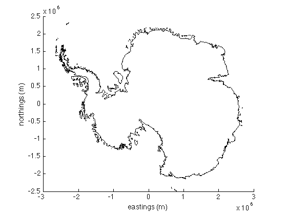

plotps documentation
plotps is part of Antarctic Mapping Tools for Matlab (Greene et al., 2017). Click here for a complete list of functions in AMT.
No Mapping Toolbox? No problem. plotps works just like Matlab's plot function, but plots georeferenced data in Antarctic polar stereographic coordinates (true latitude 71°S).
Contents
Syntax
plotps(lat,lon) plotps(...,LineSpec) plotps(...,'PropertyName',PropertyValue,...) plotps(...,'km') h = plotps(...)
Description
plotps(lat,lon) plots georeferenced data in Antarctic polar stereographic eastings and northings.
plotps(...,LineSpec) specifies line or marker style.
plotps(...,'PropertyName',PropertyValue,...) specifies any number of line or marker properties.
plotps(...,'km') plots in polar stereographic kilometers instead of the default meters.
h = plotps(...) returns a column vector of handles to lineseries objects, one handle per line.
Examples
Start by plotting a grounding line inferred from Bedmap2 for context:
bedmap2('gl','xy') xlabel('eastings (m)') ylabel('northings (m)')
Example: Markers
Now use plotps to place a big red pentagram at (80°S, 120°W):
plotps(-80,-120,'rp','markersize',20)
Example: Lines
Now plot a line from the South Pole to McMurdo Station:
[mcmlat,mcmlon] = scarloc('mcmurdo station'); scarlabel 'South Pole' scarlabel 'McMurdo Station' plotps([-90 mcmlat],[0 mcmlon])
Citing AMT
If this function or any other part of Antarctic Mapping Tools is useful for you, please cite the paper that describes AMT.
Greene, C. A., Gwyther, D. E., & Blankenship, D. D. Antarctic Mapping Tools for Matlab. Computers & Geosciences. 104 (2017) pp.151-157. doi:10.1016/j.cageo.2016.08.003.
Author Info
This function was written by Chad A. Greene of the University of Texas Institute for Geophysics (UTIG), February 2015, for inclusion in the Antarctic Mapping Tools package. Updated July 2015 to allow plotting in polar stereographic kilometers.